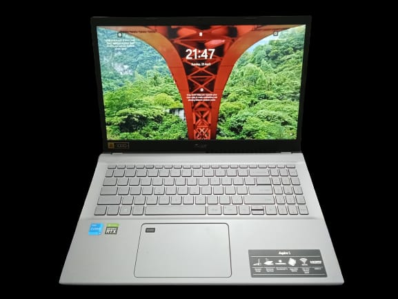

Sunday was a productive day for me and my brother. We both made some significant purchases.I bought a new laptop, which I think is going to be very helpful for both my work and personal life. I spent a good amount of time installing necessary software on my laptop and getting it up and running. It was great to see all the different programs that were available and I was really excited to start using them for work.
My brother also made a big purchase by buying a new SUV. I'm really happy for him as he now has more freedom and mobility to move around. All in all, we both had a great Sunday, and our purchases are sure to make our lives better in the long run.